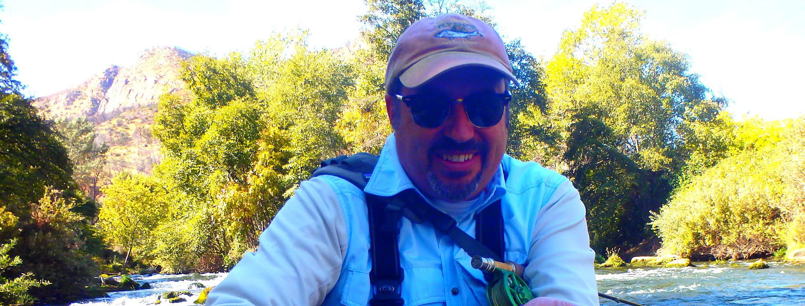

Home / Reviews
Reviews
What clients say.
Nearly every trip Richard runs ends with a first fish, a new skill, or both. Here is what people wrote afterwards.
Client reviews
In their own words
Collected from Trip Advisor, Google and letters to Richard. Reviews are reproduced as written.
My wife and I booked Richard for a trout trip, but the water was low where we were supposed to fish so we opted for the Yuba River to chase some steelhead. Richard is knowledgeable and patient. He had me and my wife catching fish in little time. I found both people at Napa Valley Fly Guides to be courteous and professional in person and via email and phone calls. He brings a great lunch too! I have fished in many places in the U.S. and abroad, and sometimes a good day is directly attributed to my guide. This was one of those days.
I had the pleasure of fishing with Richard and can't say enough about him and my overall experience. I was hoping for help with my technique and came away with that and so much more. Richard treats Putah Creek as if it was his own river — and in many ways I believe it just might be! He showed me some great spots and explained the thought process behind everything he did. He also picked up garbage along the river for haul-out. Richard is definitely a steward of Putah Creek. I highly recommend booking a trip with him.
Recently I fished Putah Creek with local guide Richard Loft. Richard proved to be a seasoned expert on this challenging trophy trout stream. In the past I found Putah Creek difficult to wade as well as difficult to fish. Richard addressed both these concerns. He taught me the technical skills necessary to catch (and release) several beautiful and strong native rainbow trout. I plan to use Richard again.
My friend Doug and I hired Richard to guide us as first time fishermen on Putah Creek. We paid him for the full day, and without him it would have been extremely difficult to even begin to fish this difficult but exciting venue. Richard showed us how to rig up, where to drop in, and how to improve our casting technique in close quarters. He also provided a delicious lunch, some interesting stories, and a lot of enthusiastic advice. I was lucky enough to hook into one rainbow and land another, both about 12 to 14 inches and full of fight.
I didn't know that Putah had rainbows this big, and so close to home too. Had a great time. I've been with other guides and Richard is one of the most passionate, excited and attentive that I've met. Highly recommended for all skill levels, beginner through expert. The better you are, the more you will catch, and Richard has a very patient, teaching heart, so everyone will learn something.
We had the pleasure of fishing with Richard in late September and wow, did he deliver! Although the fish were a little finicky, Richard was patient with his teaching and had us both up and fishing in no time. Very knowledgeable about the area and the fish. Next thing we knew, a half day trip turned into a full day — we had such a great time! If you are looking for something off the beaten path in Napa, definitely give Richard a call.

Fish with Richard
Your name could be next.
Most clients arrive as beginners and leave able to read a run. Book a half day to start, or a full day if you want the water to yourself.
Phone or text
707-294-4738
Where we meet
Putah Creek & the lower Yuba, Napa Valley CA
Payment
50% deposit by cash, check or Venmo
